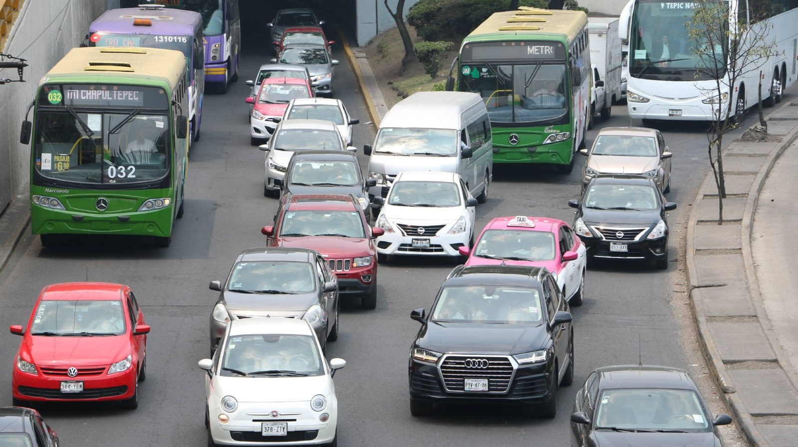

Imagen: Cuartoscuro.com
Ensanchamiento de avenidas, segundos pisos, banquetas diminutas o inexistentes, transporte público mal conectado, lento o inseguro. Ese es el escenario que acecha la movilidad en nuestras ciudades y que ha llevado al mexicano a considerar el auto como una necesidad, más que un privilegio. Pero ¿qué pasa cuando cubrir esa necesidad puede comprometer la estabilidad económica?
Mantener un automóvil en México cuesta, en un estimado conservador, al menos $3,300 al mes (CalculoSeguro.mx, 2026), sin tomar en cuenta el costo del vehículo ni la mensualidad de un crédito. Según BBVA, el gasto total en transporte no debería superar 15% del ingreso mensual.
Tomando en cuenta los ingresos de los trabajadores (formales e informales), con datos del INEGI (ENOE, 2026): 78% gana hasta dos salarios mínimos. Para 46% que percibe dos o menos, mantener un automóvil por $3,300 mensuales superaría 20% de sus ingresos. Y apenas 9% gana más de dos salarios mínimos, aunque ello no garantiza que el gasto total esté dentro de lo recomendado.
Sin embargo, el automóvil sigue siendo la apuesta: en siete años, el parque vehicular creció 37%, mientras que la población creció poco más de 5% (IMCO, 2026). Esto es, en buena medida, reflejo de una agenda de movilidad nacional con tendencia a priorizar el medio de transporte individual sobre una red de transporte colectivo.
El fin último de toda política pública debería ser mejorar las condiciones de vida de la mayoría, pero en materia de movilidad y planeación urbana se invisibiliza a más de la mitad de los trabajadores, para quienes el auto es un gasto difícil de sostener. En la alternativa, el transporte público, el costo se paga con tiempo, pues sus usuarios pierden, en promedio, 46 horas más al año en el tráfico que quienes se mueven en vehículo privado (IMCO, 2026).
La dependencia al automóvil coloca a muchos mexicanos ante una contradicción: tener uno puede comprometer su estabilidad económica, pero no tenerlo puede limitar su acceso a oportunidades y su calidad de vida. Se debe exigir que nuestra política pública se enfoque en una planeación urbana que priorice y mejore las redes de transporte colectivo, así como desmitificar que, de ser así, sólo se beneficiaría la clase baja de México y no a la mayoría de la clase trabajadora.
Desde el enfoque de paz positiva, se debe construir una justicia social, igualdad de oportunidades y estructuras que garanticen el acceso a derechos. Que las ciudades obliguen a sus trabajadores a elegir entre mantener unas finanzas saludables o un transporte inclusivo es lo que Galtung llama violencia estructural. En cambio, las ciudades con una planeación basada en cuidar el tiempo y las economías de sus trabajadores construyen paz positiva.
CIPMEX · Centro de Investigación para la Paz México, A.C. · Paz que se piensa, paz que se construye